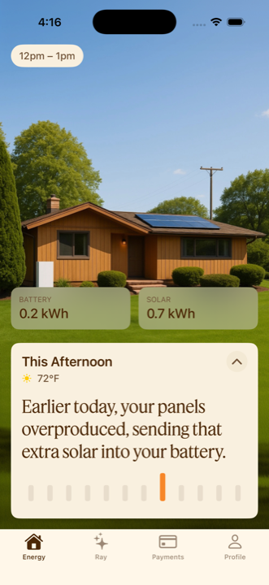
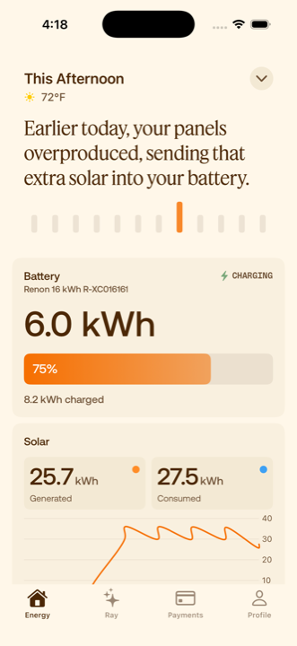
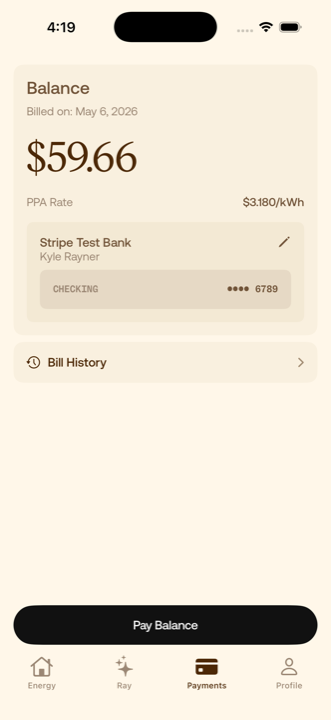

Credit & Underwriting
CompletedSoft Credit Inquiry Completed
 Case study
Case studyThis collection is private for now. Enter the password to view.
← Return to mikebatts.net
I lead product and design for our partner portal, homeowner app and Ray, our AI assistant.
 Partner portal
Partner portal
Orchard House
OriginationStage 1 of 6
Ask RayOrchard House · DL-1042
What’s holding this project up?
Title verification. The title document is uploaded and waiting for reviewer approval. The agreement can’t be sent until it’s approved.
Source: Orchard House project
Senior PM & Product Engineer
Part oneThe portal
01Handoffs
Our origination portal follows a project from the first door knock and a signed agreement, through document verification, design, permits and township inspections, to installation and permission to operate. It’s a fragmented process, with a lot of different parties carrying the football: sales reps and partner companies, installers, and our own Ops and Growth teams.
Building it was a lot like building the plane while flying it. Since day one I’ve worked closely with our COO, sales reps, installers and the Ops and Growth teams, alongside our five engineers. Most of my job was making each handoff obvious: whose turn it is, what they need, and what happens next.
Credit, system details, the utility bill, title and the signed agreement
Uploaded documents get reviewed
The final system design
Permits, township inspections and the utility
The system goes on the roof
The system is turned on
02Project pages
Each stage has its own requirements and its own owners. Credit, system details, the utility bill, title and the agreement all belong to origination, so I built the project page around the stages and the requirement cards that move a project forward, instead of one long form.
Later stages stay visible but unreached. A sales rep can see the road ahead without mistaking it for work they can do today.
142 Orchard Lane · DL-1042
Soft Credit Inquiry Completed
utility-bill.pdf
Acceptable documents for title verification
Send the PPA to the customer.
I built the project pages, stage navigation, and requirement flows around the work itself. The six phases have different conditions and owners. Credit, equipment, system design, pricing, utility bills, title checks, and the agreement belong to origination, not one generic form.
The illustration selects five cards for readability. Later stages remain visible but unreached. Actual availability depends on the project, its completed requirements, and the viewer’s permissions.
03Dashboards
A salesperson follows their own projects. A reviewer works a queue. I made the navigation role-aware, so people only see the places they can actually work, and added saved views so the filters someone uses every morning are one tap away.
I built persistent, personal filter-and-sort sets across the dashboards. The sidebar shows destinations the user is entitled to access. A Sales/Reviewer switch appears only for users entitled to both roles, not as a universal mode switch.
This is a static, selected-column reconstruction. In the product, saved views can be created, updated, and deleted. These views keep frequently used filters close without duplicating the underlying project record.
View and manage your jobs
| Customer Name | Stage | Next Step | Sales Rep |
|---|---|---|---|
| Alex Morgan142 Orchard Lane · DL-1042 | Origination | Awaiting review | Jamie Park |
| Jordan Lee26 Maple Drive · DL-1086 | Document Verification | Upload missing documents | Jamie Park |
| Sam Rivera8 Cedar Court · DL-1103 | Installation | Submit installation photos | Taylor Brooks |
04Project Notes
A status can’t tell the whole story. Our first fix for coordination was something we could ship quickly: Project Notes, a thread on every project where people can post, mention a teammate, attach a file and get an answer right next to the work.
On a phone, shrinking the desktop page buried Notes below a long block of applicant details. So on phones I moved Notes above the details, collapsed the stages into the current one, and opened Notes as a near-full-height sheet.
Alex Morgan · DL-1042
@Taylor Brooks The bill is uploaded. What still needs to happen before we can send the agreement?
Title verification is awaiting reviewer approval. I’ll check on the timing.
Confirmed the system details with the homeowner.
Title verification document uploaded. Awaiting reviewer approval.
Threaded replies, individual mentions, removable pending attachments, drafts, unread counts, and notification preferences all shape the handoff. Notification deep links open the project’s Notes and focus the relevant thread.
Attaching a file to a note keeps evidence with the conversation. It does not file it as a project document or approve a requirement. In this example, the bill was uploaded to the project separately. Posting a reply does not complete a requirement.
Ask Ray carries the note’s context into an editable draft before it is sent. Nothing sends automatically. The Notes modal closes so the Ray drawer opens in view; a person can then review a reply before posting it.
The desktop and mobile Notes cards both exist on the page. I fixed their duplicate IDs and refresh behavior so an update reaches both, and refined mobile navigation, touch targets and deep links. In the real portal, Notes opens in a centered desktop modal and a 92dvh mobile sheet. The phone illustration demonstrates the stage disclosure; its Notes link takes you to the thread beside it.
Part twoHomeowners
05The homeowner app
For a homeowner the questions are different. What did my panels make today? What’s the battery doing? What do I owe?
I designed the energy and payments experience in the Daylight app with Daylight’s iOS engineer, who implemented the native app, and I worked on the homeowner product on the web. The Energy screen leads with the home itself and one plain sentence about what it did, before any chart. Payments keeps the balance, the rate and the bank on file in one place.



Original screenshots from the Daylight homeowner app.
Daylight already had a shared design language. I worked with Marketing to put it into the product and help it mature across web, iOS and marketing surfaces, and a lot of that work was deciding where the two audiences should feel different.
The portal is a working tool: white, dense, built for scanning many projects. The homeowner app is about one home, so it’s warm and photographic, with Feature Deck for the sentence that matters and the number you came for. The type, the orange and Ray tie the two back together.
Portal
Title VerificationPending Approval
Jordan LeeDocument Verification
Neutral and dense. Status across many projects.
Homeowner
Earlier today, your panels overproduced.
Charging
Warm and plain-spoken. One home at a time.
Part threeRay
06Back in the portal
People used Notes, which was the point. After a few weeks of real use, I went back through the questions. A lot of them looked answerable from information we already had, in the project itself, our backend, or the knowledge base that holds our SOPs and underwriting guidance. And many notes that tagged someone had no reply recorded in the thread.
That doesn’t tell us whether someone answered elsewhere. It did tell me the answer often existed before anyone asked. People didn’t need another place to post a question. They needed the answer while they were in the middle of the work.
@Taylor Brooks What’s still holding up the agreement on this one?
Already on the project pageTitle verification is waiting on review.
Tagged, no reply in the thread
Does the utility bill have to be from the last month, or will any recent bill work?
In the knowledge baseUtility bill requirements are part of our underwriting guidance.
@Riley Chen Did the roof photos come through on your side?
Tagged, no reply in the thread
07Ray
From a basic chat to a portal-wide assistant
Ray is Daylight’s AI assistant. People use it to answer questions about a project or a process, add documents, build working lists and reach support.
My part
A teammate had added a basic OpenAI chat to the project-management kanban. I expanded it across the portal and turned it into a feature, leading the product direction, design and implementation.
What I held Ray to
08Workspace
People in the portal are usually in the middle of something: checking a sales dashboard, uploading documents, looking at a fulfillment order. I didn’t want using Ray to mean abandoning that context. So Ray waits in a small floating button and opens as a side drawer, full screen, or a separate mini window. Ray adapts to you; you don’t adapt to Ray.
A full-page chat would have been simpler to build. Three views meant they had to behave like different ways into the same conversation, so the answer and an unsent draft carry across as you switch and move around the portal. Turns run on the server, so a page you navigate to can pick up an answer that’s still coming in, and Ray takes the page you’re on as a hint about which project you mean, without that hint widening what you can see.
Project
Title verification Needs review
The same conversation in whichever view you pick.
Orchard House · DL-1042 · Origination
I’ll check with the reviewer.
09Sheets
We shipped Ray to Daylight Ops internally first, interviewed people about how they were using it, and went through the feedback and transcripts for gaps. A big request was CSVs: which jobs are held up in document verification, which jobs are overdue for a particular installer.
A CSV answers that question once. Sometimes they needed a working list they could return to. So Ray now creates a sheet that saves the query behind the list and runs it again whenever you open it. The sheet uses the permissions of whoever is looking, so sharing the link doesn’t share the creator’s access, and you can still download a CSV.
1The request
Show installation reviews with their status and feedback.
I created a sheet for those reviews.
Installation reviewsOpen sheet2Before: a CSV export
Saved Sep 2, 9:40 AM
| Project | Review | Feedback |
|---|---|---|
| Orchard House | Rejected | Photo is missing |
| Juniper House | Rejected | Document needs review |
Frozen at the moment it was saved.
3Now: a saved sheet
Reopened Sep 5, 4:12 PM
| Project | Review | Feedback |
|---|---|---|
| Orchard House | Rejected | Photo is missing |
| Juniper House | Approved | Reviewed Sep 4Changed on reopen |
| Cedar House | Rejected | Roof measurement is unclearAdded on reopen |
1 record changed, 1 added since the file was saved.
The learning was to understand what people needed to do after getting an answer.
10Actions and support
Some requests are really actions: put this file on my project, or get me a person. For both, I designed the same interaction. Ray shows exactly what it’s about to do, you review and confirm, and then you see what actually happened.
That last step matters. Putting a utility bill on a project isn’t the same as the requirement being approved, so the result says it’s waiting for review.
Orchard House · DL-1042 · Origination
Ray can make mistakes. Check important info.
Orchard House · DL-1042 · Origination
Ray can make mistakes. Check important info.
Review the file, the project and the document type.
Support was Ray’s other job. People had questions for Daylight itself, Ops was resolving those cases by hand, and we needed a support stack for every Daylight surface. When Ray can’t help, it offers to escalate, and the case goes to a person with the context attached.
Homeowners reach the same path from the app, where Ray has its own tab. Our iOS engineer implemented the native conversation and cards, and I added the shared document, knowledge and support actions they call. It runs on the same service as the portal, with its own knowledge base, tools and access, enforced on the server. It can take people to the bank connection and payment screens we already had, but it never handles bank credentials or authorizes a payment.
I’ve since built Ray into the homeowner web dashboard too. That’s merged behind feature flags, so I’m not counting it as launched.
The conversation, project and current page go with the request.
Classifies and summarizes the case, following SOPs and policies from Ops and Growth.
Configured by us, separately from the classification, to pick the team.
The case lands where the team already works.
Resolves it and closes it.
Where’s my signed agreement?
Here’s the signed agreement for your home.
Ray can make mistakes. Check important info.
11Evaluation
Ray isn’t a model we trained on Daylight. It’s an existing model connected to our approved knowledge and to tools scoped by permission. Process questions pull from the knowledge base, project questions query current project data and notes, and Ray cites what it used.
Retrieval started as keyword search over a curated Markdown knowledge base. I added semantic search alongside it, because notes and questions often describe the same situation in different words. We combined the two rankings and kept keyword search as the fallback.
Our first evaluation didn’t show that hybrid search was better in general. Our golden set paired each question with the article we expected back, and it only checked retrieval. Ray can pull the right article and still misread it, or answer half the question.
What our golden set checked
Retrieved the expected article
What I’d check next
12Engineering
Ray runs inside Daylight’s existing stack. These are the parts the design depended on.
The portal and the homeowner app call the same Ray service. Each audience gets its own knowledge, tools and access.
Python · Django · Jinja
HTMX · Stimulus · Tailwind
A turn runs on the server and streams through a buffer, so a page that loads mid-answer can reconnect. Finished messages are saved.
Responses API · SSE
Redis · PostgreSQL
Search is scoped before results reach the model. Document uploads and support escalations are reviewed and confirmed, with a fresh access check before they run.
pgvector · BM25
Scoped queries · Confirmed changes
13Role and team
I’ve been Senior PM and Product Engineer at Daylight since 2024. On the portal I’ve owned the work from the first workflow through design, production code and release, using AI tools throughout implementation and taking the result through engineering review.
None of it was solo. Our COO and the Ops and Growth teams set the process rules, five engineers built and reviewed alongside me, I worked with Marketing on the design language, and our iOS engineer implemented the native app.
The thread through all of it was helping a lot of different people coordinate one installation, and making the result understandable for the homeowner who lives with it. Ray became part of that work, not a replacement for it.
Since 2024: the portal’s project pages, stage navigation and requirement flows, the dashboards, and the homeowner energy and payments experience with our iOS engineer.
June–July 2026: stage-link clarity and unreached states; note attachments; mention and reply notifications; individual mentions; mobile Notes hierarchy and refresh fixes; role-aware navigation; persistent saved dashboard views.
August–September 2026: expanding Ray in the portal: the three views, document and support actions, sheets, hybrid retrieval and triage.
Ray started as a basic OpenAI chat that a teammate had added to the project-management kanban. I expanded it across the portal and made it a feature: the three workspace views, document and support actions, sheets, hybrid retrieval and triage, and the shared actions the homeowner app calls. I implemented it with AI tools and took it through engineering review. Our iOS engineer implemented the native app, and triage follows policies from our Ops and Growth teams.
Every portal and Ray image here is a reconstruction with fictional data. The homeowner app screenshots are original.